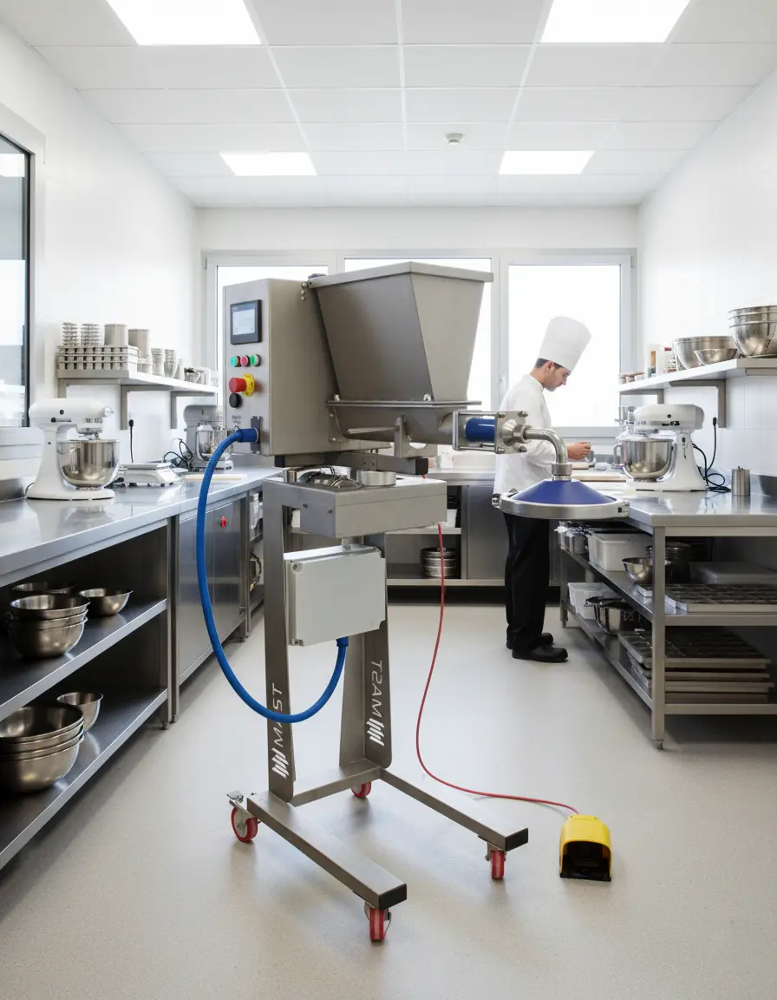

Progettazione macchinari
Dallo studio di fattibilità alla progettazione esecutiva, sviluppiamo soluzioni costruite attorno al processo produttivo.
Carrè · Vicenza · Italia
Progettiamo e costruiamo macchinari, integriamo tecnologie e governiamo ogni fase del progetto industriale.

Soluzioni tecnologicheChi siamo
MAST nasce a Carrè, nel cuore industriale del Veneto, per trasformare esigenze produttive complesse in soluzioni concrete.
Affianchiamo aziende alimentari e laboratori con competenze di progettazione, costruzione e project management. Analizziamo il processo, sviluppiamo la tecnologia e seguiamo l'integrazione fino all'avviamento.
Competenze integrate
Dallo studio di fattibilità alla progettazione esecutiva, sviluppiamo soluzioni costruite attorno al processo produttivo.
Realizziamo macchinari robusti, ne curiamo l'installazione e l'integrazione nell'impianto esistente.
Coordiniamo concept, fornitori, tempi, qualità e messa in servizio con un unico riferimento tecnico.
Analizziamo processi e macchine esistenti per individuare soluzioni di efficientamento e automazione.
Macchinari MAST